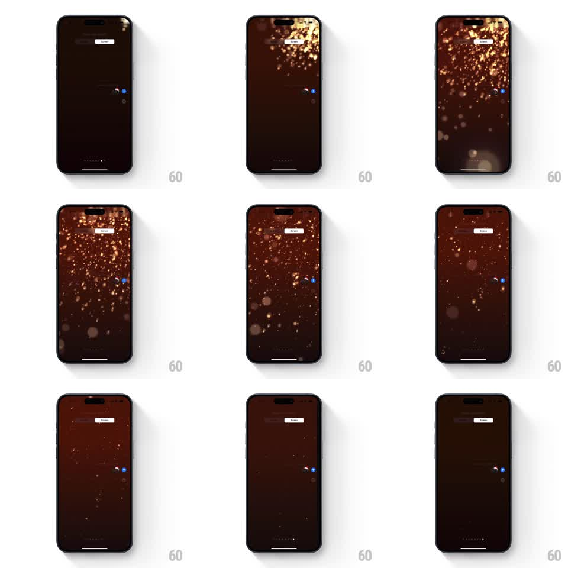

Media
Frame-by-frame

Rebuild this animation 1:1: Apple Messages' Celebration screen effect - the screen dims to a warm dark stage and golden bokeh particles rise from the bottom, filling the air with floating light that drifts, twinkles, and fades.

Rebuild this animation 1:1: Apple Messages' Celebration screen effect - the screen dims to a warm dark stage and golden bokeh particles rise from the bottom, filling the air with floating light that drifts, twinkles, and fades. ## Integration Integration: stack-agnostic spec - springs given as stiffness/damping, timed motions as duration + curve; map every value to your framework and animation library of choice. ## Scene The Messages "Send with effect" preview: the conversation dims to a deep warm brown-black, the sent bubble glowing amber at the right. Golden bokeh orbs of varying size well up from the bottom edge, rising and multiplying until the screen shimmers with hundreds of soft golden circles, then thin out and disappear. ## Motion spec Pattern: rising golden bokeh field, ~7s total. - The screen dims to a warm dark tone over 300ms; the bubble takes on a golden glow. - Particles spawn along the bottom edge (20 to 40 per second at peak), sizes from 2px sparkles to 40px blurred orbs, opacity inversely tied to size (large orbs softer). - Each particle rises (1.5 to 3s to cross the screen) with a gentle horizontal sway (plus/minus 20px sine, random phase) and a slow twinkle (opacity oscillation, 600ms period). - Density builds over the first 2s to a full-screen golden shimmer, holds ~2s, then emission stops and the field thins as particles exit the top or fade (1.5s). - The screen brightens back to the conversation (400ms). ## Calibration - Large orbs are heavily blurred (true bokeh), small ones are sharp sparks - the depth mix sells it. - Colors stay in the gold-amber range; no white, no confetti shapes. ## Reduced motion A soft golden glow pulses once behind the bubble. ## Don't miss - Particles originate along the whole bottom edge, densest near the bubble. - The dim background is warm (brown-black), not neutral grey.